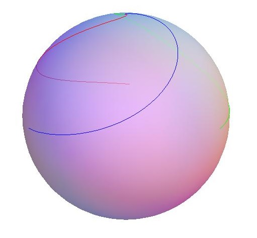

Project Euler 532
Project Euler 532
题目
Nanobots on Geodesics
Bob is a manufacturer of nanobots and wants to impress his customers by giving them a ball coloured by his new nanobots as a present.
His nanobots can be programmed to select and locate exactly one other bot precisely and, after activation, move towards this bot along the shortest possible path and draw a coloured line onto the surface while moving. Placed on a plane, the bots will start to move towards their selected bots in a straight line. In contrast, being placed on a ball, they will start to move along a geodesic as the shortest possible path. However, in both cases, whenever their target moves they will adjust their direction instantaneously to the new shortest possible path. All bots will move at the same speed after their simultaneous activation until each bot reaches its goal.
Now Bob places \(n\) bots on the ball (with radius \(1\)) equidistantly on a small circle with radius \(0.999\) and programs each of them to move toward the next nanobot sitting counterclockwise on that small circle. After activation, the bots move in a sort of spiral until they finally meet at one point on the ball.
Using three bots, Bob finds that every bot will draw a line of length \(2.84\), resulting in a total length of \(8.52\) for all three bots, each time rounded to two decimal places. The coloured ball looks like this:

In order to show off a little with his presents, Bob decides to use just enough bots to make sure that the line each bot draws is longer than \(1000\). What is the total length of all lines drawn with this number of bots, rounded to two decimal places?
解决方案
令\(W=1000\)。初始构型是正 \(n\) 边形（在某条纬线上），规则对每个机器人完全一致，且系统对绕极轴旋转不变。因此全过程中构型始终保持同纬度、等经度间隔，因此只需跟踪一个机器人 \(A\)；其目标机器人 \(B\) 与它同纬度，经度差恒为\(\Delta=\dfrac{2\pi}{n}.\)
设当前纬度为 \(\phi\)（北半球，向北极增大），则初始纬度满足\(r_0=\cos\phi_0=0.999, \phi_0=\arccos(r_0).\)
取球面三角形 \(NAB\)，其中，\(N\) 为北极，那么可得\(NA=NB=a=\dfrac{\pi}{2}-\phi,\angle ANB=\Delta,AB=c\)。由球面三角形余弦定理可得\(\cos c=\cos^2 a+\sin^2 a\cos\Delta.\)由球面三角形正弦定理可得：\(\dfrac{\sin\alpha}{\sin a}=\dfrac{\sin\Delta}{\sin c},\)其中 \(\alpha\) 是机器人运动方向与正北子午线方向的夹角。进一步用等腰三角关系化简，可得
\[ \tan\alpha =\frac{\sin\Delta}{\sin\phi(1-\cos\Delta)} =\frac{\cot(\Delta/2)}{\sin\phi} =\frac{\cot(\pi/n)}{\sin\phi}. \]
单位球上弧长元 \(ds\) 与纬度变化满足\(\dfrac{d\phi}{ds}=\cos\alpha\Longrightarrow\dfrac{ds}{d\phi}=\sec\alpha=\sqrt{1+\tan^2\alpha}.\)故单机器人总长度\(\displaystyle L_n=\int_{\phi_0}^{\pi/2}\sqrt{1+\frac{\cot^2(\pi/n)}{\sin^2\phi}}d\phi.\)
令\(r=r_0, r:r_0\to 0,d\phi=-\dfrac{dr}{\sqrt{1-r^2}},\)可化为\(\displaystyle L_n=\int_0^{r_0}\frac{\sqrt{\csc^2(\pi/n)-r^2}}{1-r^2}dr.\)记\(A_n=\csc^2(\pi/n)>1,\)则\(\displaystyle L_n=\int_0^{r_0}\frac{\sqrt{A_n-r^2}}{1-r^2}dr.\)
考虑不定积分\(\displaystyle I(A)=\int \frac{\sqrt{A-r^2}}{1-r^2}dr, A>1.\)代换 \(r=\sqrt A\sin u\)：\(\displaystyle I= A\int\frac{\cos^2u}{1-A\sin^2u}du= \int du + (A-1)\int\frac{du}{1-A\sin^2u}.\)
再令 \(t=\tan u\)，有\(\displaystyle \int\frac{du}{1-A\sin^2u}=\int\frac{dt}{1-(A-1)t^2}=\frac1{\sqrt{A-1}}\operatorname{artanh}(\sqrt{A-1}t).\)故\(I(A)= u+\sqrt{A-1}\operatorname{artanh}(\sqrt{A-1}\tan u)+C.\)
回代\(u=\arcsin\dfrac{r}{\sqrt A},\tan u=\dfrac{r}{\sqrt{A-r^2}},\)得到\(\displaystyle \int \frac{\sqrt{A-r^2}}{1-r^2}dr=\arcsin\frac{r}{\sqrt A}+\sqrt{A-1}\operatorname{artanh}\left(\frac{r\sqrt{A-1}}{\sqrt{A-r^2}}\right)+C.\)
于是单机器人长度的闭式：
\[ L_n= \arcsin\frac{r_0}{\sqrt{A_n}} +\sqrt{A_n-1} \operatorname{artanh}\left( \frac{r_0\sqrt{A_n-1}}{\sqrt{A_n-r_0^2}} \right). \]
因为 \(A_n=\csc^2(\pi/n)\) 随 \(n\) 单调增，且被积函数对 \(A\) 单调增，所以 \(L_n\) 对 \(n\) 单调增，直接从 \(n=3\) 向上找首个 \(L_n>W\) 即可。
代码
1 | from math import sqrt, sin, pi, asin, atanh |